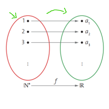
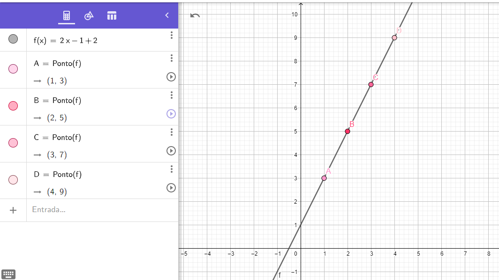
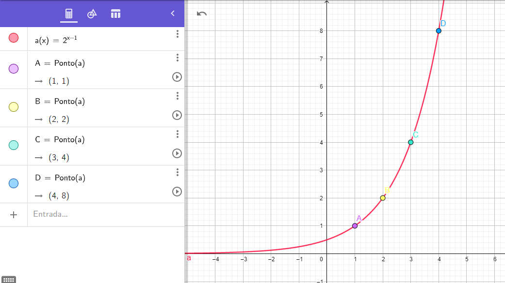

Progressões aritméticas e geométricas
Primeiro, é importante entender o conceito de sequência e todas as suas propriedades, pois ele servirá de base para entender o resto do conteúdo.
Sequências numéricas seguem sempre um padrão, portanto os números da sequência são seguidos um do outro seguindo um padrão.
Exemplo: (0, 2, 4, 6, 8, ...) Essa é uma sequência numérica em que o padrão é que os números "pulam" de duas em duas unidades, ou podemos simplesmente dizer que é uma sequência de números pares.
As sequências também são consideradas funções, onde um elemento n, pertencente ao conjunto dos números naturais (N), é associado à um elemento an. O n significa posição, portanto, entendemos que um elemento n será associado a um elemento a que está na posição n da sequência. Exemplo:

Essa imagem foi tirada do PDF da prof, e ela mostra a realação entre n e an. Assim, neste exemplo, notamos que o elemento n de valor 1 corresponde a posição a1 da sequência, o elemento n de valor 2 corresponde a posição a2 e assim por diante.
Lei de formação
Ela pode ser definida de três formas:
Fórmula de recorrência
São dadas duas regras. Uma para calcular o a1 e a outra para saber o padrão da sequência para poder calcular os próximos números.
⤷ Exemplo: {a1 = 2
{an = an-1 + 4, n ≥ 1 Dessa forma, a sequência ficaria: 2, 6, 10, 14, 18, 22, 26, 30...
Termo Geral
Expressamos cada termo (an) em função de sua posição n.
⤷ Exemplo:
Escreva os 4 primeiros termos dessa sequência na qual o termo geral é: an = 2n + 1
n = 1 → a1 = 3 n = 2 → a2 = 5 n = 3 → a3 = 7 n = 4 → a4 = 9
Por propriedade de termos
É informada a propriedade, a característica/padrão quue a sequência deve seguir
⤷ Exemplo:
Escreva os 8 primeiros termos dessa sequência infinita de números pares na ordem crescente:
Dessa forma, a sequência ficaria: (0, 2, 4, 6, 8, 10, 12, 14...)
Terminados esses conceitos de sequência, podemos dar início à progressão aritmética.
Progressão aritmética
Conceitos básicos
A progressão aritmética (PA) é uma sequência numérica em que todos os números, a partir do segundo termo, são a soma de seu anterior mais uma razão, que chamaremos de r. Muito confuso?
⤷ Vamos fazer um exemplo: (0, 3, 6, 9, 12, 15...) → a1 = 0 r = 3
Existem 3 classificações para r:
Crescente, quando r > 0 e assim, o termo seguinte vai ser sempre maior que o anterior
Decrescente, quando r < 0 e assim, o termo seguinte vai ser sempre menor que o anterior
Constante, quando r = 0, e assim o termo seguinte vai ser sempre igual ao anterior
Fórmula do termo geral
an = a1 + (n - 1)r
⤷ Vamos fazer um exemplo:
ache a 10º posição da PA (2, 6, 10, 14...) → a1 = 2 r = 4 a10 = ?
a10 = 2 + (10 - 1).4 → a10 = 2 + 9.4 → a10 = 2 + 36 → a10 = 38
Relação com a Função Afim
Como a sequência é também uma função, podemos fazer uma relação com a função afim. Assim, os pontos seriam (n, an), onde n seria a posição, localizado no eixo 𝓍, e an seria o valor dessa posição, localizado o eixo y.
Vamos imaginar o seguinte:
Temos a PA (3, 5, 7, 9...), onde a razão (r) é 2 e o a1 é 3. Vamos calcular o valor da posição 10:
a10 = 1 + (10 - 1).2 → a10 = 1 + 9.2 → a10 = 19
Pensando nisso, agora sabemos que o ponto é (10, 19), pois a posição está no eixo 𝓍 e o valor dessa posição é 19. Agora vamos construir um gráfico para representar como seria a relação entre a PA e a função afim:

No exemplo acima, tem 4 pontos marcados, para mostrar como seria a PA no gráfico da função afim.
Interpolação aritmética
Usamos a interpolação aritmética quando queremos adicionar um número k de números entre dois extremos de uma PA finita.
(a1, a2, ..., an ), onde a1 é o primeiro termo, an é o último termo e o restante chamamos de meios. Usamos a fórmula n = k + 2 para descobrir a quantidade de posições que tem na PA. Agora, vamos fazer um exemplo:
Vamos interpolar 3 meios entre os extremos 2 e 6. Para isso, temos que descobrir a razão: n = 3 + 2 → n = 5
Agora que sabemos a quantidade de posições, vamos usar a próxima fórmula para saber a razão (r):
an = a1 + (n - 1).r → 6 = 2 + (5 - 1).r → 6 - 2 = 4r → r = 4 / 4 → r = 1
Agora que temos a razão, vamos somar 1 até chegar no 6. Portanto, a PA fica: (2, 3, 4, 5, 6)
Soma dos termos finitos de uma PA finita
Usamos essa soma quando não queremos somar todos os termos um por um. A fórmula dela é: Sn = (a1 + an).n / 2
Vamos fazer um exemplo, onde a PA é (2, 5, 8, 11, 14...), e queremos saber a soma dos primeiros 10 termos:
Primeiro, vamos calcular o valor da 10º posição com a fórmula do termo geral:
a10 = 1 + (10 - 1).3 → a10 = 1 + 9.3 → a10 = 28
O próximo passo é fazermos a soma com a fórmula que colocamos acima:
S10 = (2 + 28).10 / 2 → S10 = 300 / 2 → S10 = 150
Progressão geométrica
Definição
A progressão geométrica é uma sequência em que o termo seguinte (a partir do segundo) é o produto do anterior pela constante, que chamaremos de q. Vamos olhar alguns exemplos para entender melhor:
(2, 4, 8, 16, 32, 64, 128...) → a1 = 2 e q = 2.
A razão nós podemos calcular por: q = a1 / a2
! Também temos que lembrar que a constante pode ser 0, exemplo: (6, 0, 0, ...) → Aqui a constante é zero pois quando dividimos 6/0 o resultado que obtemos é 0.
Classificação
Crescente: é quando o termo seguinte é maior que o anterior. A constante q pode ser q > 1, quando a PG tem os termos positivos. Exemplo: 1, 3, 9, 18, 36, 72, ...); ou 0 < q < 1, quando a PG tem os termos negativos. Exemplo: (-18, -9, -3, -1, ...)
Decrescente: é quando o termo seguinte é menor que o anterior. A constante q pode ser q 0 < q < 1, quando a PG tem os termos positivos. Exemplo: (16, 8, 4, 2, 1, ...) ; ou q > 1, quando a PG tem termos negativos.
Exemplo: (-2, -4, -8, -16, -32, - 64, ... )
Constante: é quando o termo seguinte é igual ao anterior. Para isso acontecer, temos duas situações: a1 = 0 e q é qualquer situação. Exemplo: (0, 0, 0, ...); e a PG com termos iguais, diferentes de 0, com q = 1. Exemplo: (3, 3, 3, ...)
Alternantes: o termo seguinte tem o sinal contrário do termo anterior. Isso acontece com a condiçaõ de q < 0. Exemplo: (1, -2, 4, -8, ...)
Estacionárias: Só o primeiro termo (a1) é diferente de 0, isso acontece quando q = 0. Exemplo: (3, 0, 0, 0, ...)
Termo geral de uma PG
Para acharmos um termo da PG usamos a fórmula an = a1 . qn - 1
Vamos fazer alguns exemplos:
Calcule o 10º termo da PG (2, 4, 8, ...): q = 2, pois a2 / a1 = 2 →
a10 = 2 . 210 - 1 → a10 = 2 . 29 → a10 = 1024
Relação com a função exponencial
Na fórmula do termo geral, notamos que a PG também pode ser classificada como uma função exponencial. Se colocarmos essa fórmula em forma de função teríamos: an = a1 . qn - 1 → a(x) = aqx - 1
Aqui, o gráfico vai ser o mesmo de uma função exponencial, ou seja, a linha do gráfico vai ser sempre uma curva. Vamos ver um exemplo:

Interpolação geométrica
Como falamos em PA, interpolar números significa inserir um número k de termos entre dois números para formar, nesse caso, uma PG. Primeiramente, achamos a razão dessa sequência para depois formamos a PG completa. Vamos fazer um exemplo:
Insira 3 meios gemétricos entre 3 e 243: n = 3 + 2 → n = 5 Agora vamos usar a fórmula do termo geral para achar a razão: an = a1.qn - 1 → 243 = 3q4 → q4 = 243 / 3 → q = √81 → q = 3. Aqui extraímos a raiz quarta de 81. Portanto, a PG fica: (3, 9, 27, 81, 243)
Soma dos termos de uma PG finita
Para somarmos todos os termos de uma PG finita usamos a fórmula Sn = a1 . (1 - qn / 1 - q)
Vamos fazer um exemplo:
Some os 9 primeiros termos da PG (2, 4, 8, 16, ...) : Sn = 2 . (1 - 29 / 1 - 2) → Sn = 2 . (-511 / -2) → Sn = 255,5 . 2 → Sn = 511
Soma dos termos de uma PG infinita quando -1 < q < 1
Para calcular a soma de uma PG inifita usamos a fórmula Sn = a1 / 1 - q . Neste exemplo vamos usar a razão ½ → que é equivalente a 0,5.
Vamos calcular a soma dos termos da PG infinita (80, 40, 20, 10, ...): Sn = 80 / 1 - ½ → Sn = 160
Reflexão
Esse conteúdo foi o mais simples de todos para entender. Não pesquisei quase nada na Internet, apenas alguns exemplos de PG. O PDF da professora está muito bem explicadinho e me baseei apenas lá para fazer o trabalho 3 e o portfólio. Não fiz resumo desses conteúdo pois eu faço resumo apenas quando eu preciso entender alguma coisa que não ficou clara na hora da explicação ou da leitura. Gostei muito de trabalhar com as progressões, foi o meu conteúdo preferido desse ciclo.